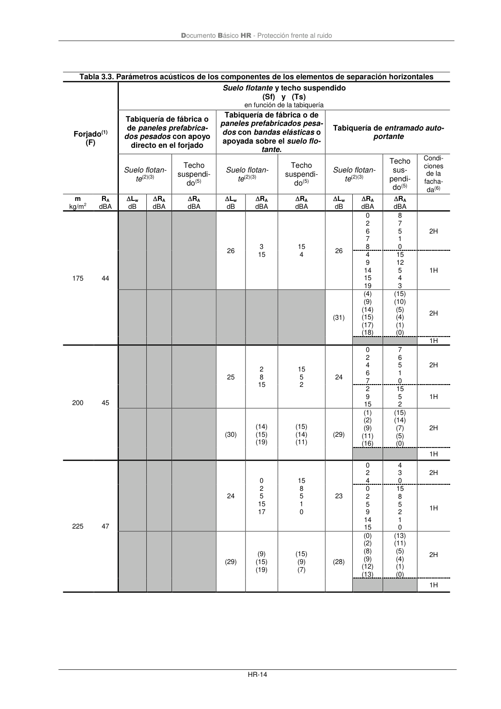

DB-HR Protección frente al ruido · edición 2019-12-20 · capa oficial
Documento DB-HR-oficial · SHA-256 del PDF a67baeca5138bb1f121f797d23a79a4557bd9ac4abacd954024893e05411eeab
Página física 20 de 80.
Copia fiel del PDF fuente · Fuente oficial
Ficha de la disposición en la fuente oficial
Formato: Texto de la página (Markdown)
Documento Básico HR - Protección frente al ruido HR-14 Tabla 3.3. Parámetros acústicos de los componentes de los elementos de separación horizontales Forjado(1) (F) Suelo flotante y techo suspendido (Sf) y (Ts) en función de la tabiquería Tabiquería de fábrica o de paneles prefabrica- dos pesados con apoyo directo en el forjado Tabiquería de fábrica o de paneles prefabricados pesa- dos con bandas elásticas o apoyada sobre el suelo flo- tante. Tabiquería de entramado auto- portante Suelo flotan- te(2)(3) Techo suspendi- do(5) Suelo flotan- te(2)(3) Techo suspendi- do(5) Suelo flotan- te(2)(3) Techo sus- pendi- do(5) Condi- ciones de la facha- da(6) m kg/m2 RA dBA Lw dB RA dBA RA dBA Lw dB RA dBA RA dBA Lw dB RA dBA RA dBA 175 44 26 3 15 15 4 26 0 2 6 7 8 8 7 5 1 0 2H 4 9 14 15 19 15 12 5 4 3 1H (31) (4) (9) (14) (15) (17) (18) (15) (10) (5) (4) (1) (0) 2H 1H 200 45 25 2 8 15 15 5 2 24 0 2 4 6 7 7 6 5 1 0 2H 2 9 15 15 5 2 1H (30) (14) (15) (19) (15) (14) (11) (29) (1) (2) (9) (11) (16) (15) (14) (7) (5) (0) 2H 1H 225 47 24 0 2 5 15 17 15 8 5 1 0 23 0 2 4 4 3 0 2H 0 2 5 9 14 15 15 8 5 2 1 0 1H (29) (9) (15) (19) (15) (9) (7) (28) (0) (2) (8) (9) (12) (13) (13) (11) (5) (4) (1) (0) 2H 1H

Datos candidatos: compruebe celdas y notas en el PDF.